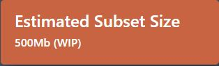

Climate Futures is basically a data portal which is used for providing climate related data to anyone based upon request. This vary idea was initiated by The Climate Future Team to bring a faster data processing system. This web-based application contains a front-end that would allow you to discover what data is available and extract what you desire.
In this application, you can extract data subset with the following attributes:
Futhermore, the system will inform you of the approximate data request size prior to initiating extraction.
